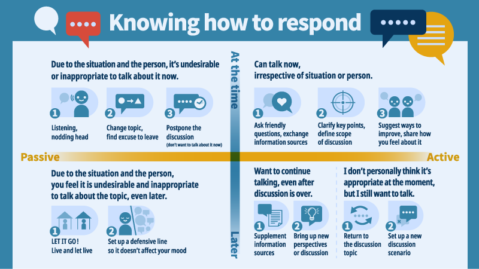

為了有效地實現你的目標，當惡意不實訊息進入討論時，你必須視情況調整你的方法。以下這五個步驟以及相應的框架，將幫助你來根據你的條件進行準備和調整，以解決問題。
第一步｜瞭解對話對象｜我在和「誰」說話
每個人都有各自獨特的背景與生命故事，因此也有一套自己的價值觀。了解與你對談的人的類型，將使你更容易找到最合適讓他們參與對話的方式。
從「個人背景」著手：
他們是什麼樣的人？ 他們的個性又是如何？ 他們懷抱著什麼樣的核心價值觀？ 他們的政治立場是什麼？ 他們的社交環境與工作環境又是什麼樣的？ 他們傾向於與朋友和同齡人談論什麼？
再來思考彼此的「關係」：
一般來說見面時的氣氛如何？你們多久一次見面聊天？這個人對你有多重要？
最後，觀察面對「資訊」的態度與行為：
這個人是否傾向主動獲取資訊，例如透過線上搜尋他們感興趣的主題，還是說被動的獲取資訊，例如：透過收看電視新聞？ 當他們收到新的資訊時，他們會在多大的程度上接受這些訊息？ 如果訊息內容是可疑的，他們會提及這些擔憂還是嘗試去驗證它們？
第二步｜判斷語境
社群媒體社團中的對話與公司晚宴期間的對話不同。 以下是一個關於在不同語境及場合裡，尋求維持對話的優缺點的簡單說明：
1. 線上平台（通訊軟體、社群網站、媒體網站、論壇、新聞網）
常用媒介： 文字、影像、音訊、影片(考量各自的優缺點).
優點：流會被記錄下來，也方便回去複習或延續討論；資訊被記錄下來，有更多的時間來進行回應。
缺點：很多人參與在談話之中，這使得注意力容易發散、跑題或阻礙人們說出自己的想法；且演算法時常會導致隧道視野。
2. 實體情景（一對一對話、私人聚會、工作場合、公共區域）
常用媒介： 口語表達、肢體語言、臉部表情、隨附的網路媒體
優點：能即時的回復對方；可以通過語氣和臉部表情來觀察彼此的情緒和想法。
缺點：取決於對話發生地點與場合，有著不同的權力關係與來自人際關係的壓力影響；團體裡的人越多，進行深入交談就越困難，也難以即時核實信息內容。
最後，一起思考兩個問題：
1. 在這些情境裡，我覺得哪一個能讓我最沒有壓力的表達自己的想法？
2. 反過來思考，我想進行對話的對象在哪種情境會感到更舒適？
有時，一段對話難以開始時，是因為雙方對於溝通管道、方式或情況感到不自在。 好比說，有些人事實上更喜歡透過文字來交流他們的想法，而不是透過一對一的實體交流，反之亦然。
第三步｜衡量資訊內容｜這些資訊會造成什麼影響？需要回應嗎？怎麼回應？
1. 自我檢視
A. 我是否對該領域有足夠的了解，能夠指出錯誤？ （是的，我能怎麼做？）/（不，我該如何回應？） B. 這些訊息/惡意不實訊息背後的價值觀對我來說有多重要？ （很重要，我一定要盡力解釋）/（沒那麼重要，看不懂也完全沒問題）
2. 資料檢視
A. 這些訊息/惡意不實訊息會產生什麼影響？ 它可能是致命的嗎？或是會導致另一個嚴重後果，還是說它本質上是無害的？
B. 我能搞清楚他人傳播這些訊息/惡意不實訊息的目的嗎？ （他們是為了操縱他人，還是一個誤傳，又或者是出於分享或社交的渴望？）
第四步｜思考對話目標｜我想要達成什麼結果？
整體來說，有三樣關鍵優先事項值得思考：
1. 指出錯誤
A. 讓他人知道他們的資訊內容有缺陷。
B. 勸阻此人繼續傳播錯誤資訊。
C. 傳授此人訊息核實的內功心法。
2. 延續對話
A. 同意下次對話的機會。
3. 維護關係
A. 保持良好的互動，但不強求下次的會面。
B. 當對方來勢洶洶時，保持淡定和從容。
第五步｜思考應對方式｜我可以怎麼回應？該怎麼延續對話？
隨著對話發生的場合、氛圍和互動性質的變化，我們可能需要靈活的調整我們的應對方式，甚至可能改變對話的目標。
